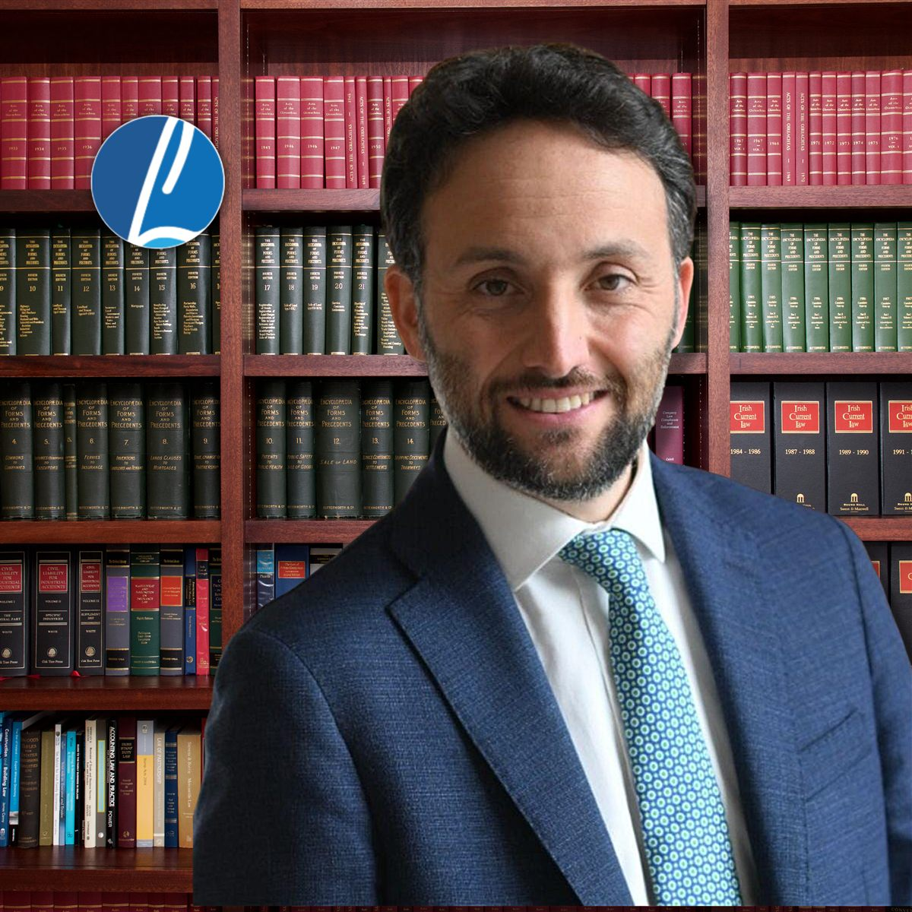
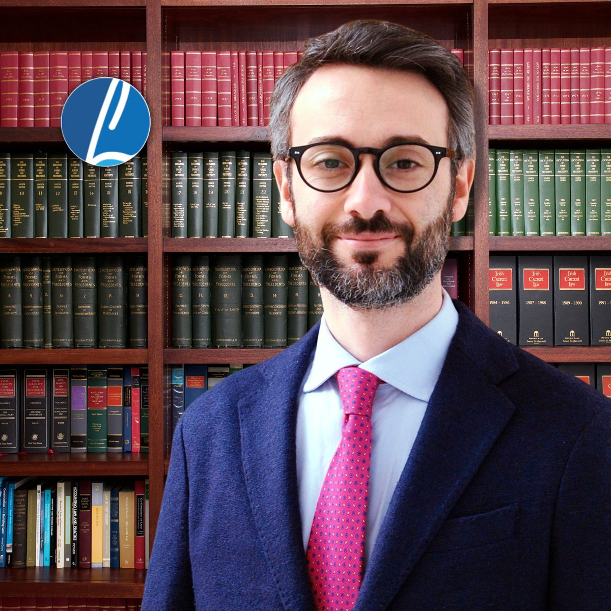

Due avvocati in attività e la tradizione di studio da cui lo studio proviene.

Avv. Luigi Lupone
Civile e amministrativo. Nato a Scafati nel 1983, laureato a Salerno nel 2006. Specializzazione per le professioni legali e master di secondo livello in diritto amministrativo all’Università Roma Tre. Iscritto all’Albo di Salerno dal 9 gennaio 2010, cassazionista dal 2022. Opera nei tribunali di Salerno e Nocera Inferiore e al TAR Campania.

Avv. Giuseppe Lupone
Diritto penale. Nato a Scafati nel 1987, laureato a Salerno nel 2011 con una tesi in sistemi giuridici comparati. Specializzazione per le professioni legali in diritto penale. Iscritto all’Albo di Salerno dal 19 gennaio 2015. Segue procedimenti a Napoli, Salerno, Avellino, Nocera Inferiore e Vallo della Lucania.
La tradizione dello studio
Il dott. Giuseppe Lupone senior, giurista e docente, è stato segretario generale del Consiglio regionale della Campania e cultore di diritto amministrativo, regionale e costituzionale all’Università di Salerno. Lo studio ne conserva il metodo di studio del caso.